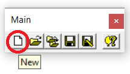

1.5.4.3 New File
In the Main toolbar,
select new to start the creation of a new hand-drawn sketch

Although different input types are supported by REFER, only sketches are accepted as new files. Line drawings cannot be created directly from scratch, but they can be opened as previously created files. Simple line-drawings can be created via the new sketch input module by using the Rule Line Mode.